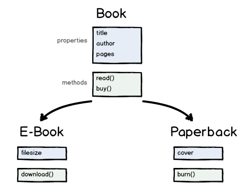

JavaScript
Object-Oriented Programming
jtcoders.github.io/oojs
Object-oriented programming

- Objects have properties and methods
- There can be many "instances" of objects
Defining objects in JS
// The constructor function
function Book(title, author, numPages) {
// The properties of this object
this.title = title;
this.author = author;
this.numPages = numPages;
this.currentPage = 0;
}
// A method on the object
Book.prototype.read = function() {
this.currentPage = this.numPages;
console.log("You read " + this.numPages + " pages!");
}
// Instantiating a new object
var book = new Book("Robot Dreams", "Isaac Asimov", 320);
book.read();
Exercise Time!
Object Inheritance
- Objects can inherit properties/methods of other objects
- Objects can implement parent methods in different ways
What does "new" do?
- Creates a new Object
- Creates and binds a new
thisto that object - It sets this new object's
prototypeproperty to be the constructor function'sprototypeobject - It executes the constructor function
- It returns the newly created object
Extending objects in JS
// The constructor function
function PaperBack(title, author, numPages, cover) {
Book.call(this, title, author, numPages);
this.cover = cover;
}
// Extending the Book object
PaperBack.prototype = Object.create(Book.prototype);
// A new method on this object
PaperBack.prototype.burn = function() {
console.log("Omg, you burnt all " + this.numPages + " pages");
this.numPages = 0;
}
// Instantiating a new object
var paperback = new PaperBack("1984", "George Orwell", 250, "cover.jpg");
paperback.read();
paperback.burn();
Exercise Time!
Clearer Constructors
function Book(title, author, numPages) {
this.title = title;
this.author = author;
this.numPages = numPages;
this.currentPage = 0;
}
var book = new Book("Robot Dreams", "Isaac Asimov", 320);
versus:
function Book(config) {
this.title = config.title;
this.author = config.author;
this.numPages = config.numPages;
this.currentPage = 0;
}
var book = new Book({
title: "Robot Dreams",
author: "Isaac Asimov",
numPages: 320});Optional Arguments
function Book(config) {
this.title = config.title;
this.author = config.author;
this.numPages = config.numPages;
this.currentPage = 0;
}
var book = new Book({
title: "Robot Dreams",
author: "Isaac Asimov",
numPages: 320
});versus:
function Book(config) {
this.title = config.title || "Untitled";
this.author = config.author || "Unknown";
this.numPages = config.numPages || 100;
this.currentPage = 0;
}
var book = new Book({
title: "Robot Dreams",
numPages: 320
});Exercise Time!
"Object-oriented" JavaScript
JS is not a strict OO language like Java, but can still be used in an OO-like way.
Future versions of JS may have more OO concepts built into the language.